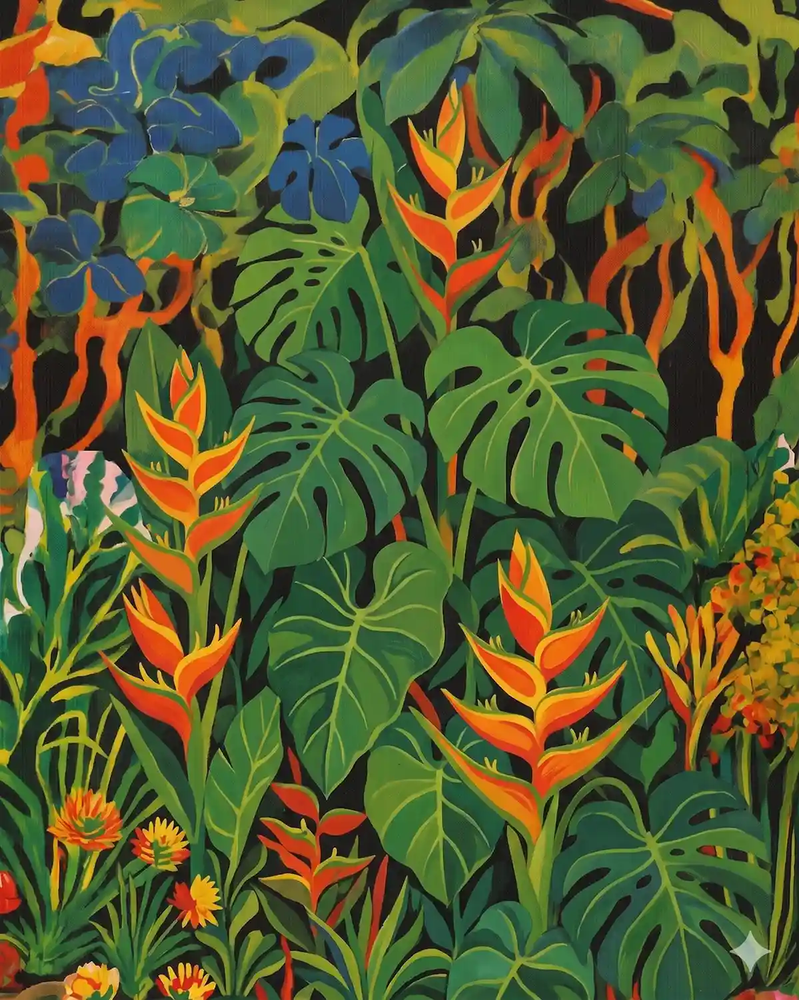
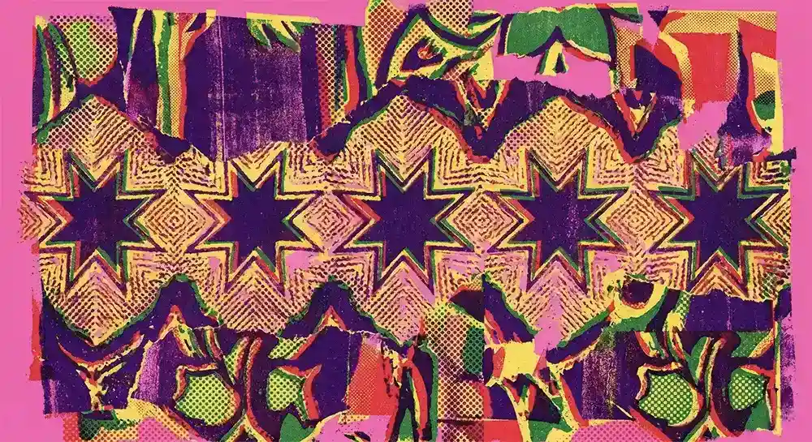
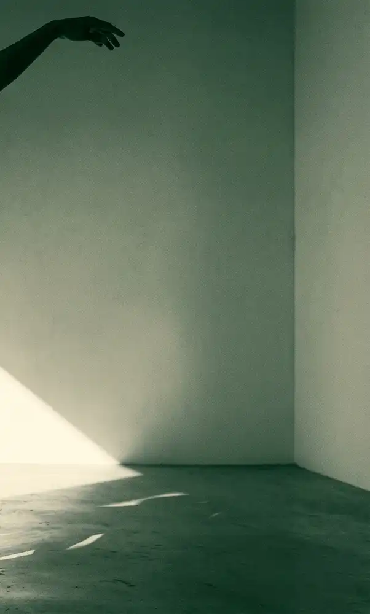
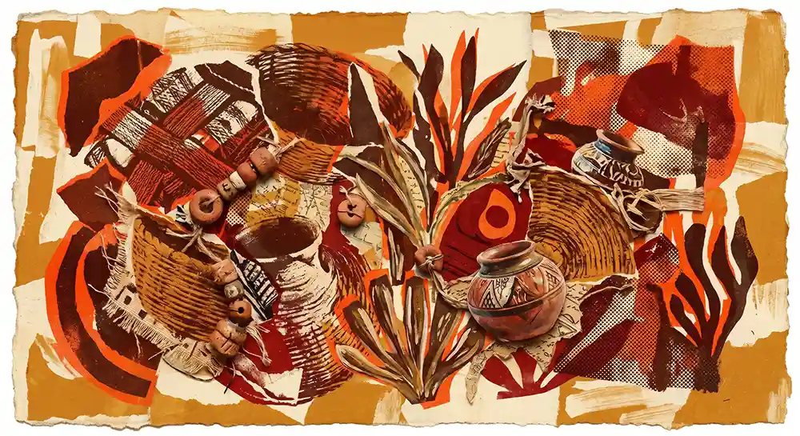
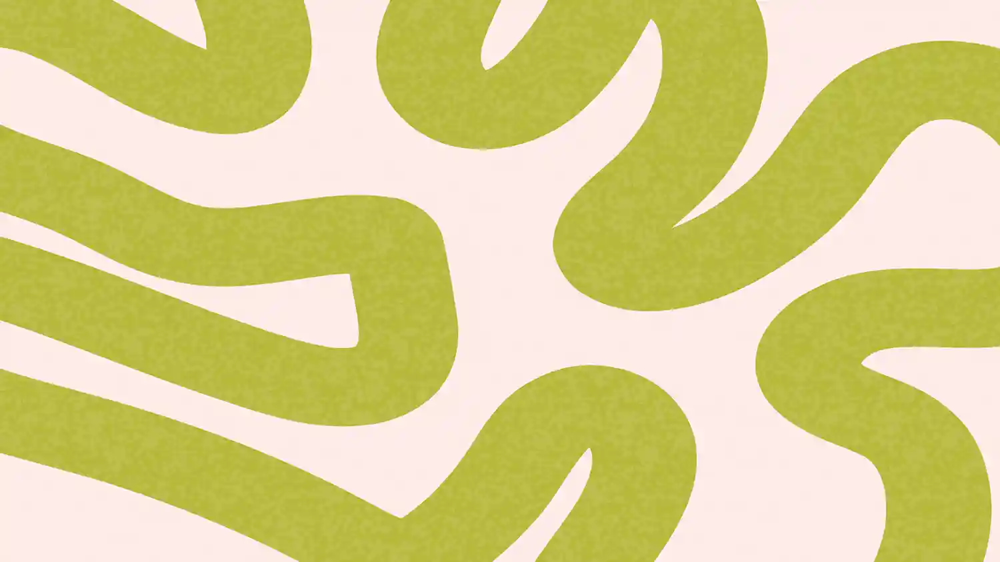
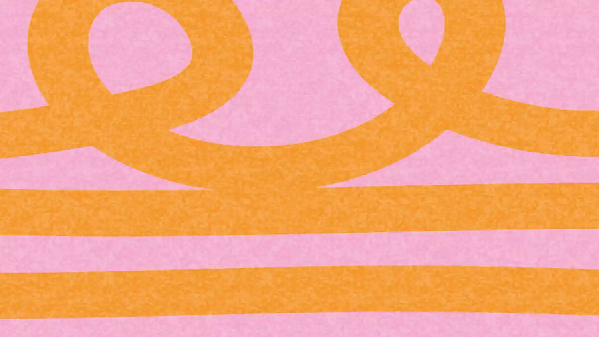
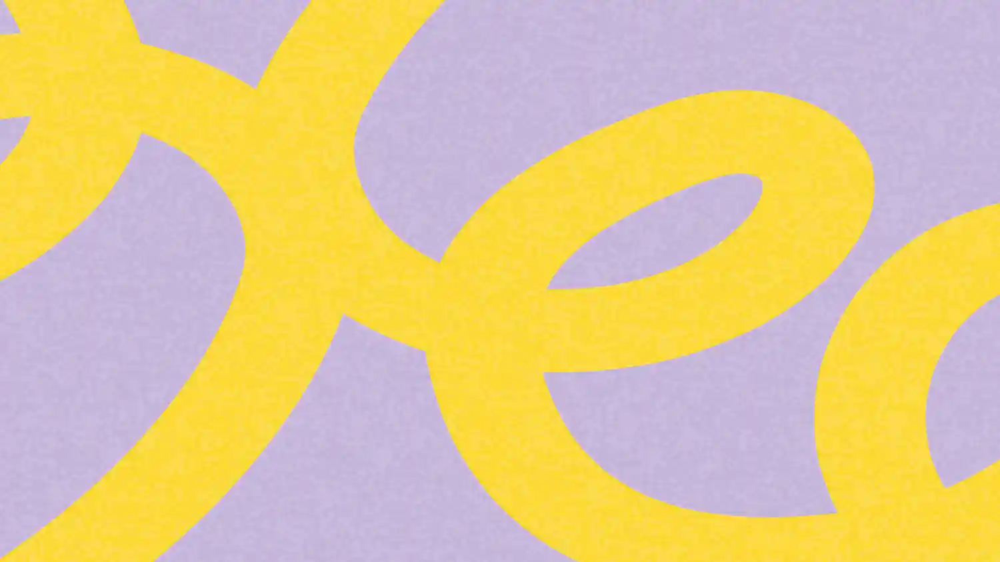
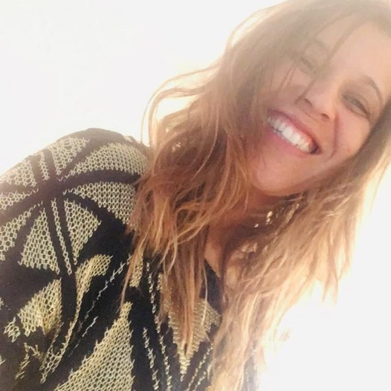

Tem muita vida acontecendo aqui.

Educadora · Arteterapeuta · PesquisadoraDançaDestino

Ritual semanalVocê dança onde estiver — e não está sozinha.
Toda sexta, às 20h, cada pessoa aperta o play no mesmo momento e dança onde estiver. Sem câmeras, sem plateia — só o movimento e a sensação de fazer parte.
Há algo que só se sente em movimento coletivo, mesmo à distância. Quem já dança, sabe.
Entre no grupo para receber a música de cada semana e dançar junto.
Entrar no grupo →Rádio Remendo.
Lorem ypsilon Lorem ypsilon
Lorem ypsilon Lorem ypsilon.

DançaDestino
Toda sexta, 20h. Você dança onde estiver, sem câmeras — só o movimento e a sensação de não estar sozinha.
para o próximo encontro
A trilha do ritual
Curadoria semanal da Elaine para acompanhar o DançaDestino.
Bilheteria
Experiências participativasEscolha seu embarque.

Encontros que respiram

Laboratórios de presença
Estudo que passa pelo corpo.
Formações baseadas em arteterapia, focadas em experiências simbólicas e manejo clínico.

Repertórios Sensíveis · inscrições abertasExperiências disponíveis.
Oficinas e travessias abertas para indivíduos, grupos, escolas e comunidades.

PONTE · oficina abertaPONTE — projeto de vida
Onde você está, o que deseja — e a ponte entre os dois. Três exercícios guiados.
Uma biblioteca que fica
Exercícios e materiais arteterapêuticos para usar na clínica, na escola ou em casa.

Material gratuitoA lista
Um ativo durável, sem algoritmo. A Elaine direto na sua caixa de entrada.
Educadora, arteterapeuta, pesquisadora.

Mestra em Serviço Social